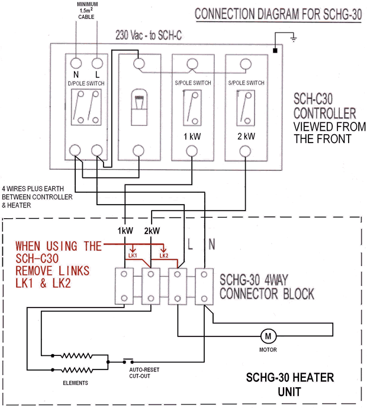
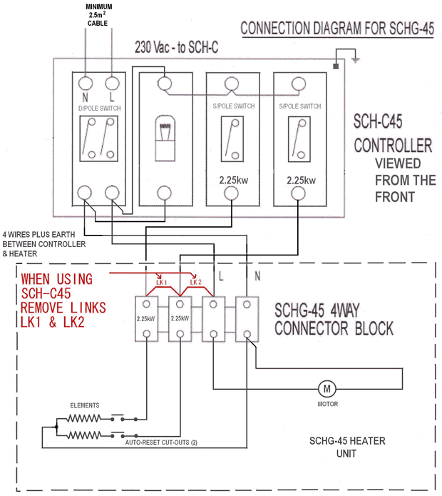
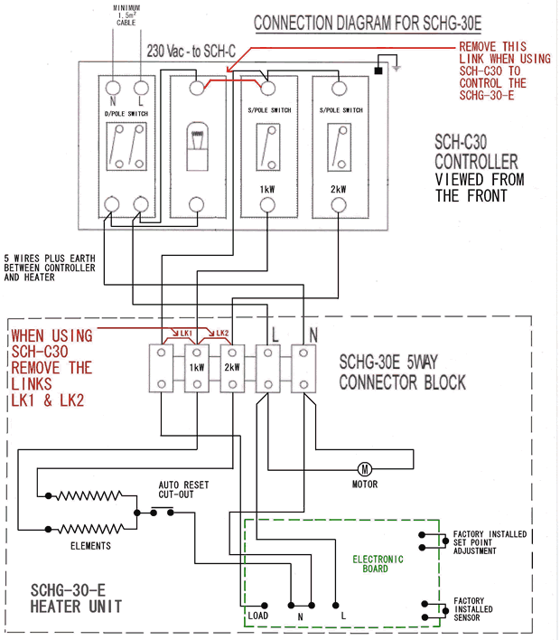

BN Thermic Instruction Sheet
SCHG Suspended Ceiling Heater - Fan Assisted
INSTALLATION AND OPERATING INSTRUCTIONS
PACKAGING - Unpack the heater and remove all packaging material paying special attention to the inlet and exhaust air openings. Remove the protective film from the front cover - if fitted.
LOCATION - The heater is intended for installation in a suspended ceiling mounted within or on the 'tee' bar supports. For optimum results do not fit in ceilings higher than 3m. As air is only introduced through the front of the unit the heater may be sighted anywhere. The air intake and discharge areas must be kept completely clear for a minimum of 1.5m from the front of the heater. In an area using multiple units. heaters should be spread to provide an even heating distribution.
INSTALLATION - If the diffuser is not fitted the unit may be installed by placing within the 'tee' bar. For reduced sized tiles, i.e. adjacent to walls, windows or doorways the front cover may be reduced in size to 400mm by carefully sawing the front cover. If a diffuser is fitted the four brackets provided should be attached to the side of the heater to enable the heater to be supported by the 'tee' bar and immediately above the diffuser. ONLY the SCH-ECD is recommended. DO NOT use plastic type diffusers as these may be damaged by the heat. Note: Attention should be paid to the adequacy of the ceiling support to ensure the additional weight can be safely accommodated.
CONNECTIONS: The heater is supplied with a convenient length of suitable flex. Connections to the mains should be wired by a competent & qualified person, by way of a suitable 20 amp switch in accordance with the current regulations and protected by an appropriate fuse or circuit breaker. Connect the heater as follows. Green / Yellow wire to terminal marked or with the letter E, Blue wire to the terminal marked with the letter N or coloured blue. Brown wire to the terminal marked with the letter L or coloured brown. THIS UNIT MUST BE EARTHED.
The 3kW heater may be converted, on site to 1.0 or 2.0kW output similarly it may be rewired to accommodate fan only operation. To modify this the front cover must be removed and the wiring changes as shown on drawing W-SCH-30E for the electronic model and W-SCH-30 for the standard model, should be followed. The 4.5kW heater may be converted, on site to 2.25kW output, similarly it may be rewired to accommodate fan only operation. To modify this the front cover must be removed and the wiring changes on the drawing W-SCH-45 should be followed. IMPORTANT: Before attempting to carry out any work or modifications ensure the supply to the heater is completely isolated from the electrical supply. This work should only be carried out by a qualified skilled person competent to do this work.
  
OPERATION:
SCHG-30 The heater may be manually switched off by a suitably rated device minimum 20 amps, or wired in conjunction with the SCH-C-30 control panel.
SCHG-30-E As above and in addition the heater incorporates an electronic thermostat with thermostat sensor. The adjustment is achieved by rotating the control knob on the back of the unit clockwise for a higher room temperature, and anti clockwise for lower room temperature. When the desired room temperature is achieved no further adjustments are necessary. The thermostat will cycle as required and the fan will operate continuously to evenly distribute the heated air.
SCHG-45 The heater may be switched off by a suitable rated device minimum 20 amps, or wired in conjunction with the SCH-C-45 control panel.
This heater is fitted with a semi-automatic safety device to prevent overheating, but the fan continues to operate. Should this occur, check and remove any foreign materials around the airways. If the heater fails to operate or the safety cut out operates again, turn off the heater and contact a qualified electrician.
Do not cover this heater as this can cause overheating and may damage the heater.
GENERAL MAINTENANCE ON ELECTRIC HEATERS
Prior to commencing any periodic cleaning or servicing always ensure the supply to the heater is completely isolated BN Thermic Electric heaters are factory assembled and tested they are non user serviceable.
The heaters are intended to operate for many years, problem free.
All moving parts are factory lubricated and therefore should require no service.
Maintenance is limited to keeping both the inlet and outlet areas free from any accumulation of dust or any other foreign materials. This is especially important immediately before the heating season. Any dust build up can be loosened using a brush and a vacuum cleaner applied to the airways to ensure completed removal of any dust . When the heater is first turned on after cleaning an unusual odour may be noted this is due to the dust particles which inevitably will be disturbed and will be burnt off from the heating element.
If in any doubt always consult a qualified electrician for advice.
WARRANTY. Your BN Thermic Heater is guaranteed for the period of one year from the date of purchase. We will repair or replace at our discretion any part found to be defective. BN Thermic cannot assume any consequential liability. This guarantee in no way prejudices your rights under common law and is offered as an addition to consumer liability rights.